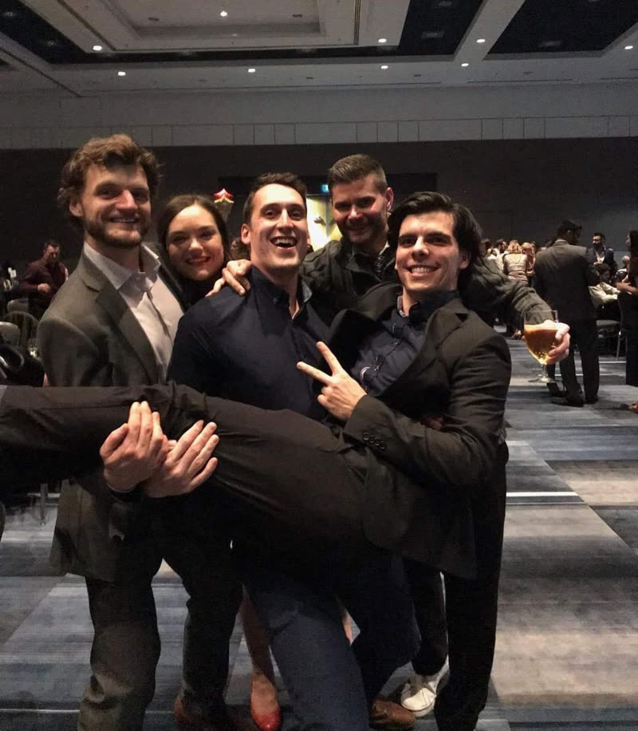

I'm Rob, a professional tournament poker player based in London, Ontario. A year and a half ago, I left a career in software development to play poker for a living — and I've been documenting the honest reality of that decision ever since.
My days are spent playing online Multi Table Tournaments across GGPoker Ontario, 888poker, and WPT Gold, often with up to 12 tables running at once.
On stream and across my content, you won't find highlight-reel-only poker. You'll get real sessions, real strategy breakdowns, and real swings — the deep runs and the brutal bubbles alike. No pretending variance doesn't exist. No selling a dream. Just what it actually takes to play this game for a living.